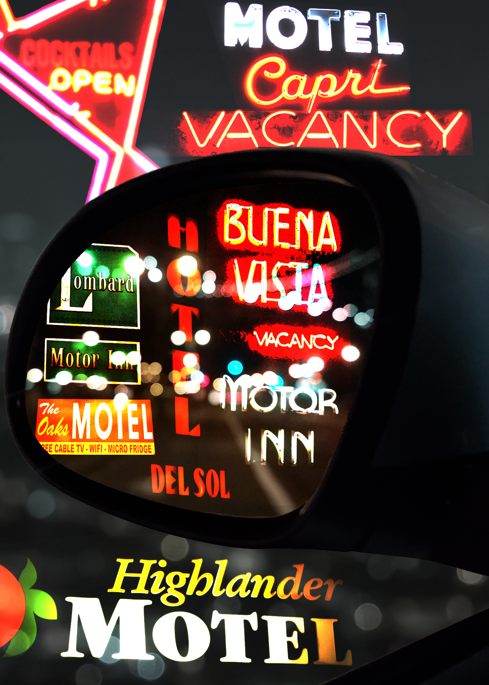
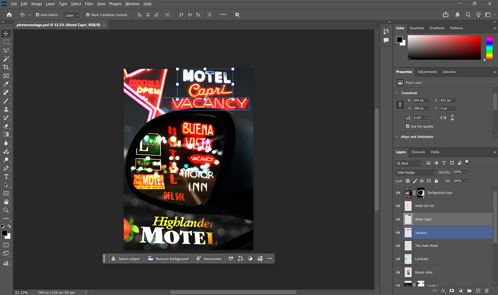

Much of my life has felt transitory, as I've moved from one place to another with restless energy and regret for paths not taken. I wanted to convey a sense of the temporary and of eternally inhabiting the spaces in between. I thought that a collage of motel signs, blurry city lights, and a car mirror would be the perfect way express those feelings. What lies behind you was temporary, but so is what lies in front of you. We are always on the move and never quite happy with where we are.
I used images of motel signs that I shot nearly ten years ago. They did not end up being used in the project I originally shot them for. In a way, this has meaning for me as I think about where I currently am in life. Work that I once discarded can now represent the paths not taken that I'm circling back to. I used the Color Dodge blend mode to give them a ghostly appearance, emphasizing the temporary nature of motels. For the blurry lights inside the mirror, I took a screencap from video footage I shot for the same project years ago. It's hard to tell, but is a shot of the the San Francisco Bay Bridge - representative of a city I left behind but would like to return to. I used a layer mask to fit it into the frame of the mirror.
The remaining elements I sourced for purely practical and less poetic reasons. I shot a photo of my car's side mirror and masked out the space inside the frame as well as the background view through the window. The background image of city lights was licensed from Adobe Stock. I intended to use another image of lights that I shot, but I did not have any that were high enough resolution to fill seven inches of height. I decreased the saturation on it to make it grayscale and the draw the viewer's eyes toward the space inside the mirror.